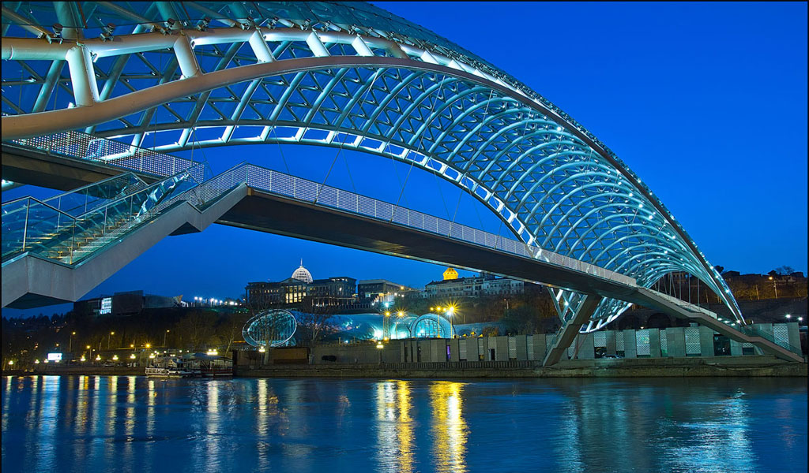
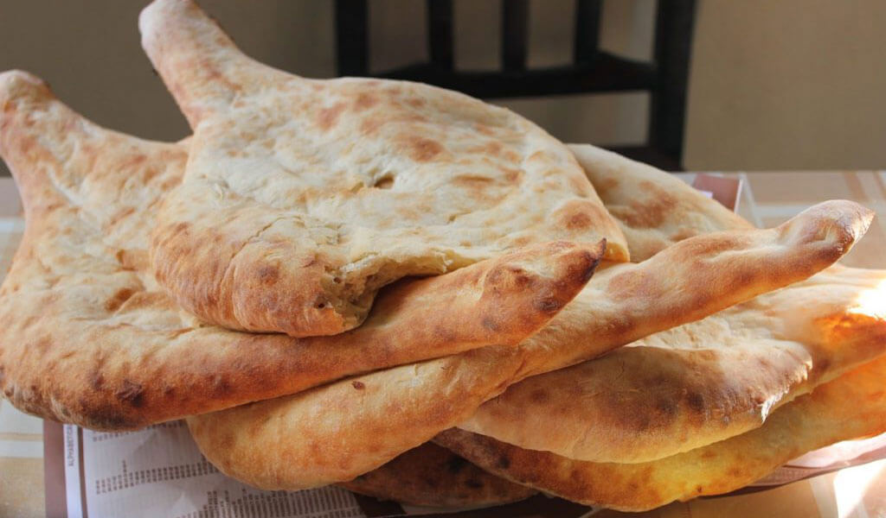
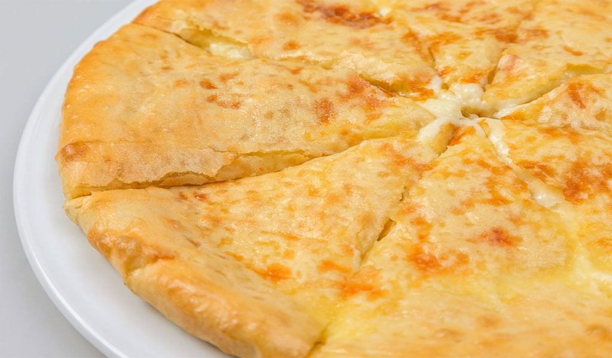
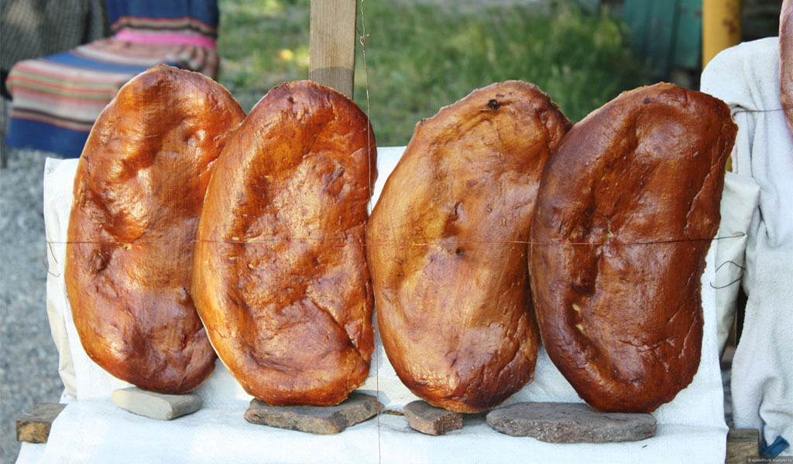
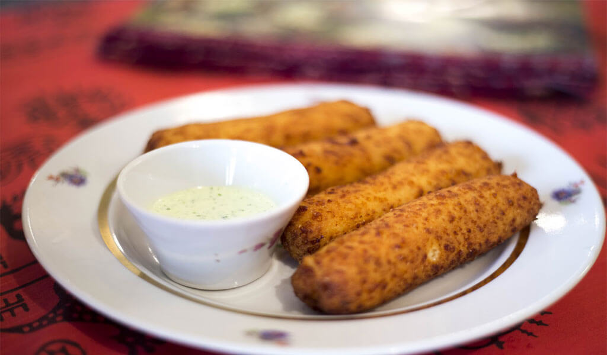
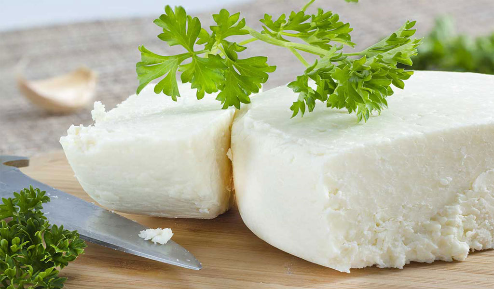
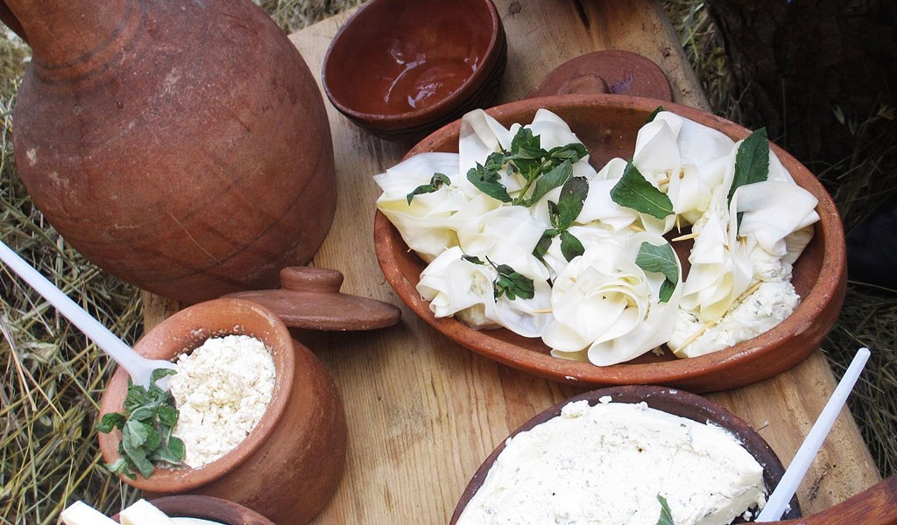
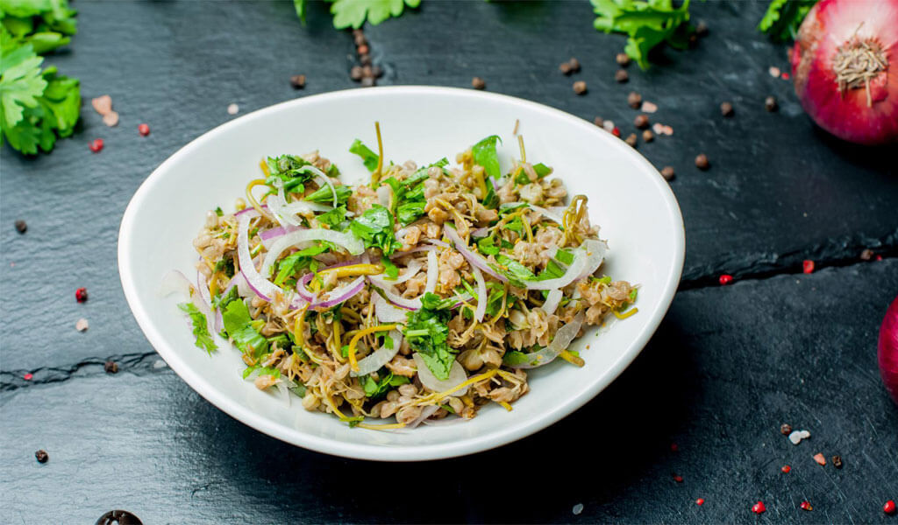
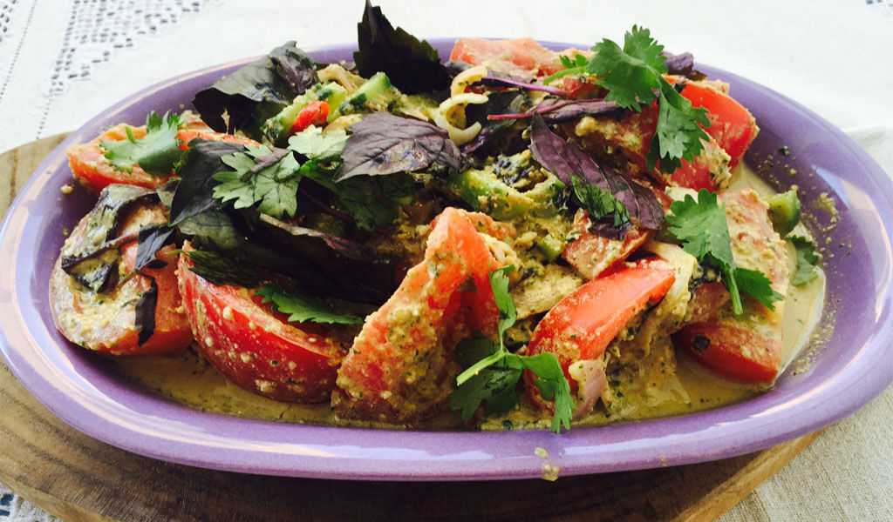
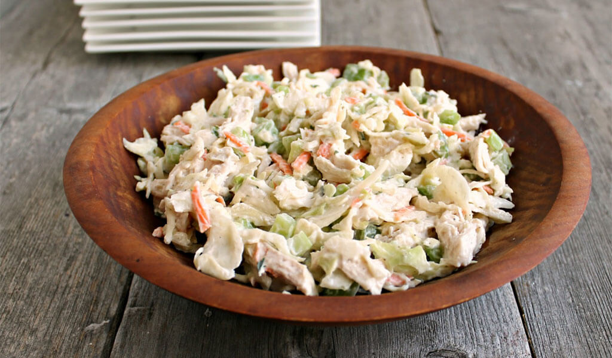

×

Georgia
Традиционная еда
Пури — самая узнаваемая выпечка в Грузии благодаря своей форме — этот хлеб не спутать ни с чем.

Хачапури — Грузинский сырный хлеб или лепешка с сыром – еще одна важная составляющая Грузинской кухни. Есть несколько версий приготовления хачапури, которые зависят от региона.

Назуки — это грузинский пряный хлеб, который можно попробовать далеко не везде. Он выпекается также в тоне, но интересен тем, что имеет аромат гвоздики, корицы и содержит изюм. Эта выпечка характерна для города Сурами. Там много небольших придорожных пекарен, в которых вы можете купить назуки горячим прямо из печи.

Чвиштари — это грузинские кукурузные хлебцы. Родом они из Сванетии. Внутри чвиштари – сыр, подаются с соусом.

Сулугуни — Грузинский сыр, по текстуре похожий на моцареллу. Он соленый, тягучий, разделяется на «ниточки». Его едят просто так или добавляют в различные блюда (например, хачапури).

Надуги — Это оригинальная грузинская закуска, состоящая из свежего творога с нежным сливочным вкусом, завернутого в тонкий сыр сулугуни.

Джонджоли — радиционная грузинская закуска, невзрачная на вид, но весьма интересная на вкус. Это маринованные цветы. Чуть-чуть напоминает квашенную капусту и соленые оливки.

Салат — Словом «салат» в меню грузинских кафе часто обозначают салат из огурцов и помидоров. Дополнительные ингредиенты и заправка могут видоизменяться в зависимости от заведения. На фото представлен салат из огурцов и помидоров с луком и грецким орехом. Еще очень вкусно получается с кахетинским маслом.

Грузинский куриный салат — Еще один салат, часто фигурирующий в меню большинства заведений, значится как qatmis salati. Представляет собой простой куриный салат с луком, майонезом и специями.

____